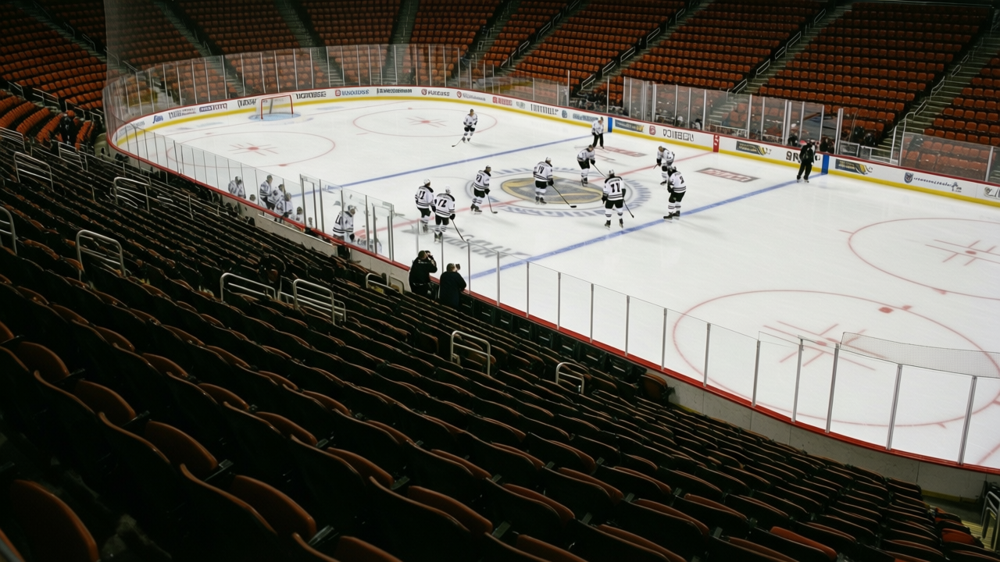
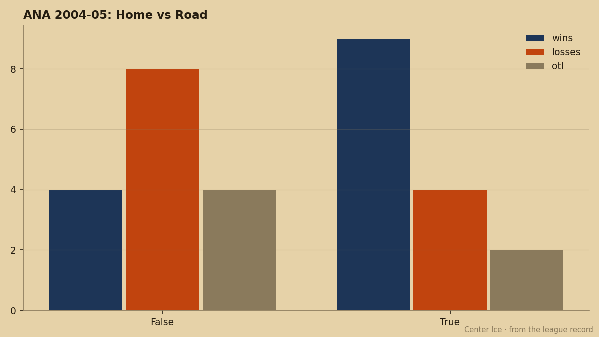

Future Files: Anaheim Is a Home Team and a Road Team and They Are Not the Same
9 and 4 and 2 in front of the crowd. 4 and 8 and 4 everywhere else. The 10-point gap is the whole season.
 Pete LarocqueScouting editor · The Prospect File
Pete LarocqueScouting editor · The Prospect File
Anaheim home record

Anaheim is 32 points and third in the Pacific. The split says otherwise.
 Mighty Ducks of Anaheim is 9 and 4 and 2 at home. On the road, the record is 4 and 8 and 4. That is a 10-point differential across a 31-game season, and it is the difference between a team that belongs in the playoff picture and one that is borrowing its position from a favorable schedule.
Mighty Ducks of Anaheim is 9 and 4 and 2 at home. On the road, the record is 4 and 8 and 4. That is a 10-point differential across a 31-game season, and it is the difference between a team that belongs in the playoff picture and one that is borrowing its position from a favorable schedule.

The gap is not a sample-size fluke. It shows up in the goal differential: 51 for and 45 against at home, 46 for and 55 against on the road. The team gives up 9 more goals on the road than it scores, while at home the edge runs the other way. A club that cannot outscore its opponents in 16 of its 31 games is not a playoff team; it wins because it is home.
The room knows it
Mike Babcock told The Tunnel's Jan Kowalczyk this week: "We're not a team that can play 60 minutes for, you know, four nights in a row. We'll get two good periods, we've got a stretch where we're flat. And the teams in this league, they punish you. Every night."
He put it more plainly about the road: "On the road, the details matter more. And we haven't paid attention to the details enough."
Those are the words of a coach who knows the ceiling is the consistency, not the talent, and the consistency does not travel.
Who carries it on the bus
Sergei Fedorov is 34. Babcock said it himself: "He's 34 going on 25, you know." He has 26 goals this season, which is a lot for a man who is two years from retirement, but the question for a scouting file is what happens when the legs stop. The answer, right now, is that nobody else on the roster has a reliable road number.
Erik Cole, 79 overall, has 6 points in his last 5 games. Jean-Sebastien Giguere, 97 overall, told Kowalczyk: "Erik in the middle, he's fast, he creates, you see the puck come alive when he's, when he's there." But 6 points in 5 games from your best two-way winger is a hot streak, not a road system.
The young guys are supposed to fill the gap. Tuomas Lydman72, 20, the 10th pick in the 2004 draft, has 13 points in 28 games at 16.8 minutes a night. Matthew Stajan, also 20, sits at 69 overall. Babcock said of Stajan: "He's going to make mistakes, but he's a guy who is going to be..." and the sentence trails off, which is its own answer.
The roster from Giguere down looks like this: a 97, a 90, then a long tail of 79s and 78s and 77s. There is no 85 between Fedorov and Bryzgalov. The middle of the room is thin, and on the road, where the building does not carry the tempo, the thin middle is all you see.
What the file says
Giguere's record is 10 and 13 overall. He said it plainly to Kowalczyk: "That's not his fault. He's our starter. We've got to score more around him. We've got to give him more of a cushion." That is a goalie saying the problem is in front of the net, not in it, and that it does not fix itself because the arena is loud.
The 32 points will look like a playoff record in January if the road stretch breaks favorably. The 10-point gap will not. A team that is 9 and 4 at home and 4 and 8 on the road is a team that has not figured out who it is when the fans are not telling it the answer.
For a scouting file, the question is whether the 20-year-olds, Lydman and Stajan and the rest, get enough road minutes this year to become the answer. If they do, the 10-point gap closes. If they don't, it is a 32-point team in April that is 12 points under its home standard and 10 points over its road one, and the record does not care which way the math goes.